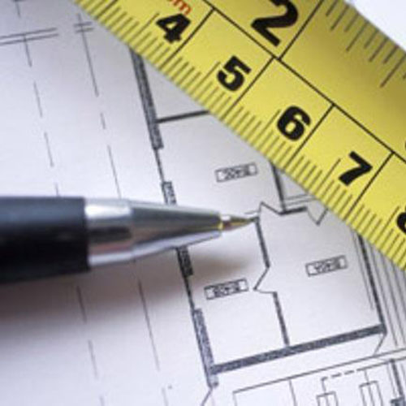

Авторский надзор

Авторский надзор в Череповце и других городах РФ
От этапа проектирования до сдачи постройки в эксплуатацию в работе над объектом может принимать участие один подрядчик и несколько организаций. ПГ Наш город выполняет все работы под ключ, а также берется за отдельные этапы строительства.
Услуга авторского надзора
Если Вы заказали проект у нас, а подрядчиком на строительство объекта является другое предприятие, обратите внимание на услугу авторский надзор.
Авторский надзор представляет собой комплексный контроль строительства на соответствие технологиям, используемым материалам и последовательности действий предписаниям проектной документации.
Что дает авторский надзор
Проект дома, коттеджа, коммерческой недвижимости, пром.объектов описывает в деталях будущее здание. Проектные организации тщательно прорабатывают вопросы безопасности объекта, начиная от фундамента, заканчивая отделочными материалами фасада, кровли, спецификой подключения объекта к коммуникациям и прочее.
Проект может быть безупречен, но иногда в процессе строительства в него вносятся изменения: отсутствие нужного стройматериала на складе, просьбы Заказчика что-то немного изменить и другие факторы могут стать причиной, что готовое здание будет построено с нарушениями.
Погрешности строительства часто влекут за собой необратимые последствия. Самые масштабные разрушение здания, выход из строя отдельных его секторов и угроза жизни людей, проживающих или работающих на территории объекта. Менее серьезные, но не менее значимые это потребность в капитальном ремонте, усилении несущих конструкций, дорогостоящие изменения в отношении инженерных сетей.
Авторский надзор это исключение самовольного изменения проекта подрядчиком, а в случае отклонений от исходного проекта это возможность подобрать материалы-аналоги, альтернативные подходы и технологии монтажа, если по каким-то причинам изначально предписанное на этапе проектирования реализовать невозможно.
При этом все вносимые изменения в проект осуществляются так, что они не ставят под угрозу жизнь и здоровье людей, безопасность здания и не несут в себе скрытых, отсроченных во времени расходов на ремонт объекта со стороны Заказчика.